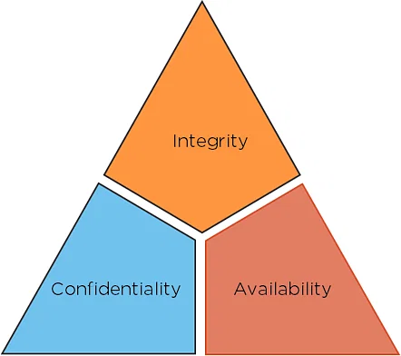

Introduction to Cyber Security for Absolute Beginners
If we talk in simpler terms, Cyber security is that part which
helps business and organization form electronic threats.
Electronic threats can be defensive devices, hackers, and
machines. The Cyber security of today, works on defending
computers, networks, databases, and smartphones from the threat.
No one notices the hard work of these cyber security
professionals. They protect you from unauthorized exploitation of
your systems.
In our Cyber security tutorial, every kind of cyber security
certificate is awarded along with why it is critical and which one
is for you, everything is included. The training includes Ethical
hacking, penetration testing, injection, SQL, and risk and
security management training. Along with these, you’ll be prepared
even for cybersecurity- interviews.
Skills covered
- SQL Injection
- Programming SKills
- Cryptography Skills
- Penetration Testing
- Security and Risk Management
Basic Terminologies
Next up, this cyber security for beginners tutorial will help you understand some of the terminologies you must be familiar with before learning anything about cybersecurity.
- Network
- A network is a connection between two or more computers so that they can communicate with each other.
CIA Triad
The security of any organization starts with three principles: Confidentiality, Integrity, Availability. And next in this cyber security for beginners tutorial we will learn about the CIA Triad, which has served as the industry standard for computer security since the time of first mainframes.

- Confidentiality: The principles of confidentiality assert that only authorized parties can access sensitive information and functions. Example: military secrets.
- Integrity: The principles of integrity assert that only authorized people and means can alter, add, or remove sensitive information and functions. Example: a user entering incorrect data into the database.
- Availability: The principles of availability assert that systems, functions, and data must be available on-demand according to agreed-upon parameters based on levels of service.
We have already created our very first Vue app! This looks pretty
similar to rendering a string template, but Vue has done a lot of
work under the hood. The data and the DOM are now linked, and
everything is now reactive. How do we know? Take a look at the
example below where counter property increments every second and
you will see how rendered DOM changes:
JS:
const CounterApp = { data() { return { counter: 0 } },
mounted() { setInterval(() => { this.counter++ }, 1000) }
}
Handling User Input
To let users interact with your app, we can use the v-on directive
to attach event listeners that invoke methods on our instances:
HTML:
<div id="event-handling"> <p>{{ message }}</p>
<button v-on:click="reverseMessage">Reverse
Message</button> </div>
JS:
const EventHandling = { data() { return { message: 'Hello
Vue.js!' } }, methods: { reverseMessage() { this.message =
this.message .split('') .reverse() .join('') } } }
Vue.createApp(EventHandling).mount('#event-handling')
Note that in this method we update the state of our app without
touching the DOM - all DOM manipulations are handled by Vue, and
the code you write is focused on the underlying logic.
It's easy to toggle the presence of an element, too:
HTML
<div id="conditional-rendering"> <span v-if="seen">Now
you see me</span> </div>
JS:
const ConditionalRendering = { data() { return { seen: true } }
} Vue.createApp(ConditionalRendering).mount('#conditional-rendering')
This example demonstrates that we can bind data to not only text
and attributes, but also the structure of the DOM. Moreover, Vue
also provides a powerful transition effect system that can
automatically apply transition effects when elements are
inserted/updated/removed by Vue.
Relation to Custom Elements
You may have noticed that Vue components are very similar to
Custom Elements, which are part of the Web Components Spec. That's
because Vue's component syntax is loosely modeled after the spec.
For example, Vue components implement the Slot API and the is
special attribute. However, there are a few key differences:
-
The Web Components Spec has been finalized but is not natively
implemented in every browser.
-
Safari 10.1+, Chrome 54+ and Firefox 63+ natively support
web components.
-
In comparison, Vue components work consistently in all
supported browsers (IE11 with compatibility build and
above).
-
When needed, Vue components can also be wrapped inside a
native custom element.
-
Vue components provide important features that are not available
in plain custom elements, most notably cross-component data
flow, custom event communication and build tool integrations.
Although Vue doesn't use custom elements internally, it has great
interoperability when it comes to consuming or distributing as
custom elements. Vue CLI also supports building Vue components
that register themselves as native custom elements.
The information used for this documentation can be found on
official Vue.js page